PC
PC · Chrome
앱을 연 뒤 주소창 오른쪽 설치 아이콘을 누릅니다. 없으면 Chrome 메뉴 → 전송, 저장, 공유 → 페이지를 앱으로 설치.
 페이스 · 과제 입력 매뉴얼
페이스 · 과제 입력 매뉴얼관리자가 권한 시트에 역할과 팀별 추진현황 시트를 적어 두면, 팀원은 로그인해서 공유된 시트를 불러와 과제와 일정을 입력하고 구글시트에 저장합니다. 진척률은 일정 칸으로 자동 계산됩니다.
과제 입력은 구글시트의 「2026 추진현황」 같은 연도 탭을 읽고 씁니다. 누가 어떤 역할이고 팀마다 어느 시트를 쓰는지는 관리자가 관리 › 권한 · 시트 설정에 적어 둡니다. 시트 연결과 팀원 초대는 팀장도 합니다.
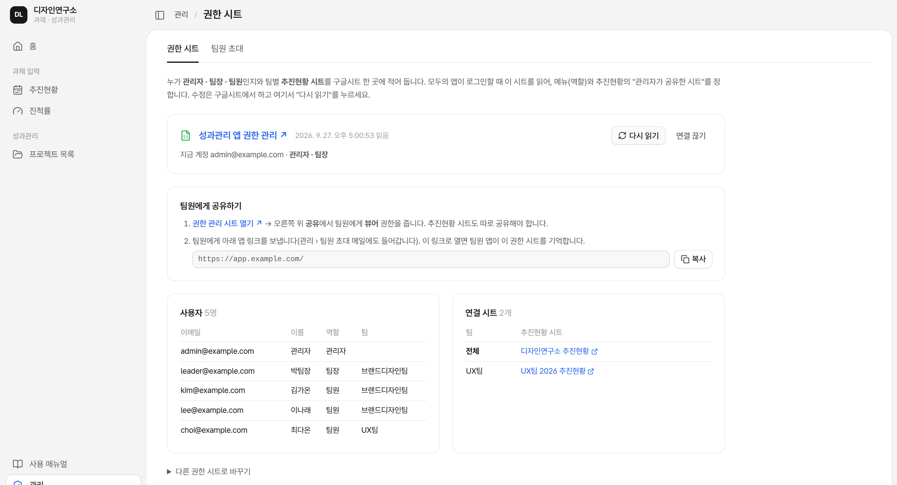
연도마다 「2026 추진현황」처럼 이름 붙인 탭을 둡니다. 입력할 팀원에게 이 시트의 편집 권한을 줍니다.
사이드바 아래 관리(팀장 · 관리자에게 보임) › 권한 시트에서 관리자가 권한 관리 시트 만들기를 누릅니다. 내 구글 드라이브에 「성과관리 앱 권한 관리」 시트가 생기고, 지금 아는 관리자 · 팀장과 지금 연결된 추진현황 시트가 미리 들어갑니다. 이미 있는 권한 시트는 링크를 붙여 연결합니다.
같은 화면의 사용자 표에서 칸을 눌러 이메일 · 이름 · 역할(관리자 / 팀장 / 팀원) · 팀 · 메모를 바로 고칩니다. 한 명 추가, 또는 여러 명 붙여넣기(한 줄에 「이메일, 이름, 팀」 · 아이디만 적으면 @gmail.com)로 넣습니다. 아래 연결 시트 표에서 팀별 추진현황 시트 링크도 고칩니다(팀을 전체로 적은 줄은 자기 팀 줄이 없는 모두가 씀).
고치면 위에 저장 안 한 변경 N건 줄이 뜹니다. 구글시트에 저장을 누르면 바꾼 것 목록을 확인한 뒤 권한 시트에 쓰고, 시트의 「변경 기록」 탭에 시각 · 누가 · 바꾼 것을 한 줄 남깁니다. 고치는 사이 누가 시트를 직접 바꿨으면 덮어쓰지 않고 시트 내용을 다시 불러옵니다. 저장하려면 로그인한 관리자 계정이 권한 시트의 편집자여야 합니다.
권한 관리 시트 열기 → 구글시트 오른쪽 위 공유에서 팀원에게 뷰어 권한을 줍니다. 추진현황 시트는 따로 편집자로 공유해야 입력 · 저장할 수 있습니다(일반 액세스는 「제한됨」 권장).
관리를 열면 팀원 초대가 먼저 보입니다(팀장 · 관리자). 내 Google 계정으로 연결한 뒤, 한 사람마다 로그인할 Gmail(권한 · 로그인용)과 받는 메일(회사 메일 등, 비우면 Gmail)을 적습니다. 붙여넣기는 한 줄에 「Gmail, 받는 메일, 이름」, 엑셀은 한 행에 한 명입니다. 받는 메일은 목록에서 바로 고칩니다. 메일 본문의 {로그인계정}은 사람마다 그 사람의 Gmail로 바뀝니다. 구글 테스트 사용자 등록은 필요 없습니다.
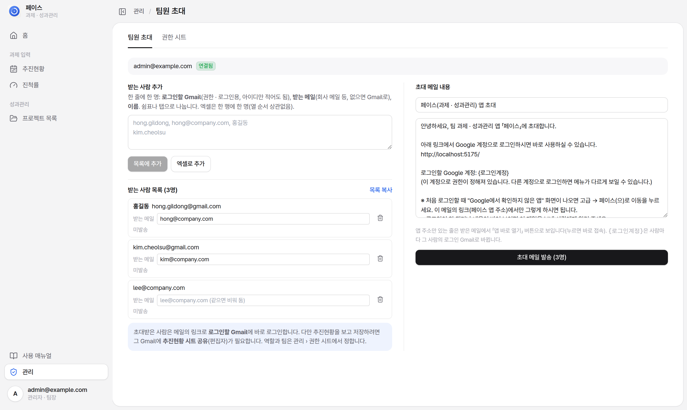
로그인하면 홈에서 할 일을 고릅니다. 모든 이동은 왼쪽 사이드바(또는 위 메뉴)에서 합니다.
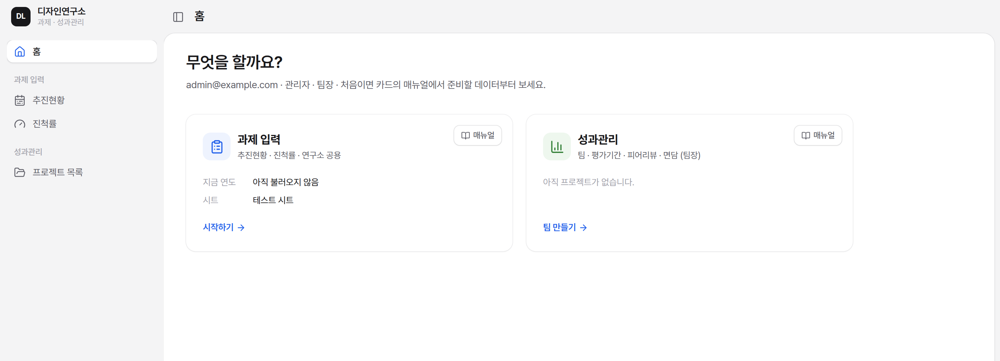
Google 계정으로 시작을 누르고 회사 구글 계정으로 로그인합니다. 이때 구글시트 읽기 · 쓰기 권한도 함께 받으므로, 불러오기 · 저장 때 권한 창이 따로 뜨지 않습니다. 이 브라우저에서 로그인 유지를 켜 두면 다음에는 이 계정으로 계속만 누릅니다.
위에서부터 홈 · 과제 입력(추진현황 · 진척률) · 성과관리(평가 목록 → 고른 평가 이름 → 과제관리 · 팀원관리 · 평가하기 · 평가결과 · 면담, 팀장만)입니다. 아래에는 사용 매뉴얼, 데이터 백업(성과관리 안에서), 관리(팀장 · 관리자), 계정 메뉴가 있습니다.
「과제 입력 / 📁 2026 실적관리 ▾ / 추진현황」처럼 지금 위치가 보이고, 오른쪽 끝 파일 메뉴가 있습니다. 왼쪽 위 로고를 누르면 언제든 홈으로 갑니다(로고와 옆의 메뉴 모양 버튼은 어느 모양에서든 같은 자리).
왼쪽 위 로고 옆 버튼(언제나 같은 자리)을 누를 때마다 펼침 → 아이콘만 → 위 메뉴 → 다시 펼침 순서로 바뀝니다. 아이콘만일 때는 마우스를 올리면 메뉴 이름이 보이고, 위 메뉴일 때는 사이드바 없이 머리 한 줄에 과제 입력 | 성과관리 전환 · 연도(평가기간) · 메뉴가 들어가 표를 가장 넓게 씁니다. 고른 모양은 이 브라우저에 기억됩니다.
사이드바 맨 아래 계정 이름 밑에 역할(관리자 · 팀장 / 팀장 / 팀원)이 보입니다. 팀원은 과제 입력만 씁니다. 로그아웃은 계정을 눌러 엽니다(위 메뉴일 때는 오른쪽 끝 동그라미).
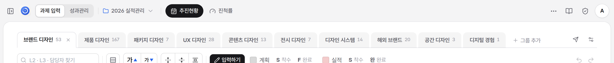
처음 추진현황을 열면 「추진현황을 시작하세요」 화면에서 관리자가 공유한 시트를 불러옵니다.
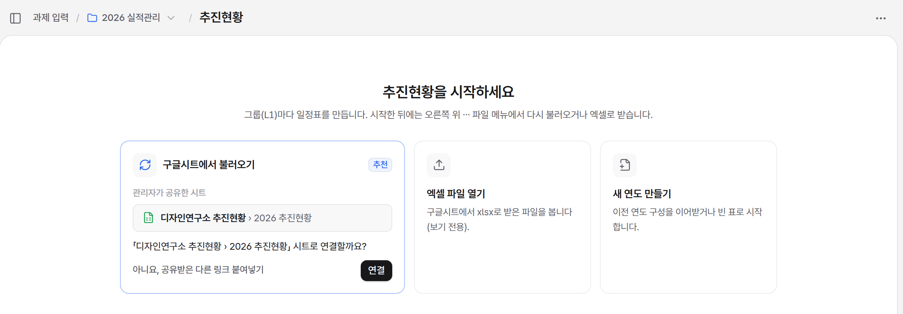
구글시트에서 불러오기 카드에 관리자가 공유한 시트가 「파일 이름 › 탭 이름」으로 보입니다. 이름 대신 링크만 보이면 시트 이름 확인을 누릅니다.
「… 시트로 연결할까요?」 아래 연결을 누르면 연도 탭을 읽어 그룹(L1)마다 일정표를 만듭니다. 다른 시트를 공유받았다면 아니요, 공유받은 다른 링크 붙여넣기에 링크를 넣고 이 링크로 연결을 누릅니다.
엑셀 파일 열기(구글시트에서 xlsx로 받은 파일 · 연 뒤 구글시트로 올리기로 시트에 올림)나 새 연도 만들기로도 시작합니다. 팀원은 공유받은 구글시트로만 시작합니다.
로그인할 때마다 연결된 시트를 자동으로 다시 읽어, 다른 팀원이 저장한 내용을 받아 옵니다. 새로 로그인하지 않고 앱을 다시 열었으면 그룹 탭 위 시트 줄이 파랗게 바뀌며 그 뒤 저장된 내용은 아직 안 받음 [최신 내용 받기]가 붙습니다.
그룹 탭 바로 위 상태 줄에는 늘 연결된 시트 이름 › 탭 · 불러온 시각 · ✓ 최신 · n분 전 확인 · 다시 불러오기 한 줄이 보입니다. 열어 둔 동안 5분마다, 오랜만에 다시 열면 바로 시트와 견줘 봅니다. 시트 이름을 누르면 구글시트가 열립니다.
엑셀 파일로 연 표는 주황 알림 엑셀 파일을 보고 있습니다. 구글시트로 올려야 팀원과 동기화됩니다.가 뜹니다. 구글시트로 올리기를 누르면 연결된 시트에 이 표를 새 탭으로 올리고(고친 내용 포함), 그 뒤로는 그 탭과 연결됩니다. 시트에 같은 이름 탭이 있으면 덮어쓰지 않고 「2026 추진현황 (엑셀 10.03)」처럼 날짜를 붙인 탭으로 따로 만듭니다. 엑셀로 받기는 고친 내용까지 넣어 파일로 받고, 구글시트에서 불러오기는 엑셀 대신 시트의 최신 내용을 엽니다.
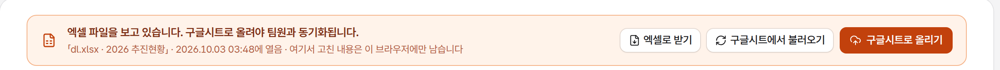
머리의 「📁 2026 실적관리 ▾」에서는 연도만 고르고, 불러오기 · 엑셀 · 시트 연결은 오른쪽 끝 「파일」 메뉴에서 합니다.
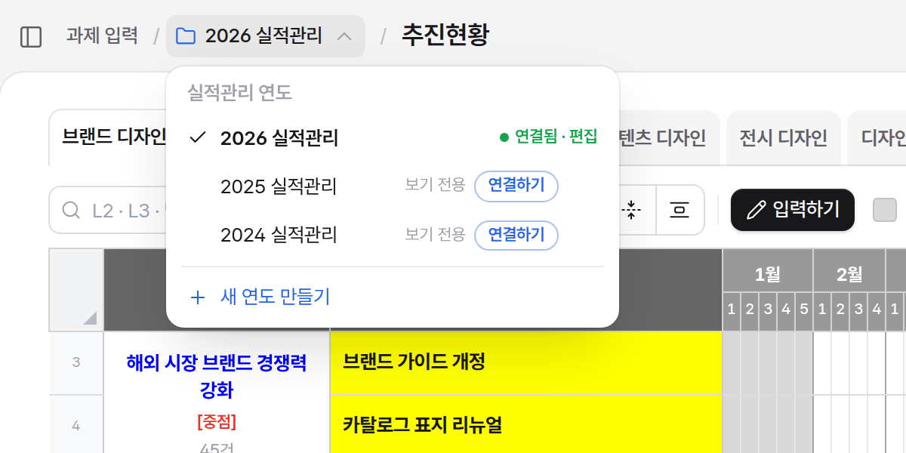
지금 입력하는 연도입니다. 여기서 고친 내용이 이 구글시트 탭에 저장됩니다.
지난 연도는 볼 수만 있습니다. 팀장 · 관리자는 연결하기로 그 탭을 입력하는 연도로 바꿉니다(입력하던 연도는 그대로 남아 다시 고를 수 있음).
앱에서 만든 연도는 이 브라우저로 표시되고 이 브라우저에 저장됩니다. 휴지통 아이콘으로 지웁니다.
쓰지 않는 연도에 마우스를 올리면 ×가 나옵니다. 목록에서만 빠지고 구글시트 탭은 그대로입니다. 메뉴 아래 숨긴 연도 n개 다시 보이기로 되돌립니다.
팀장 · 관리자에게만 보입니다. 다음 장을 보세요.
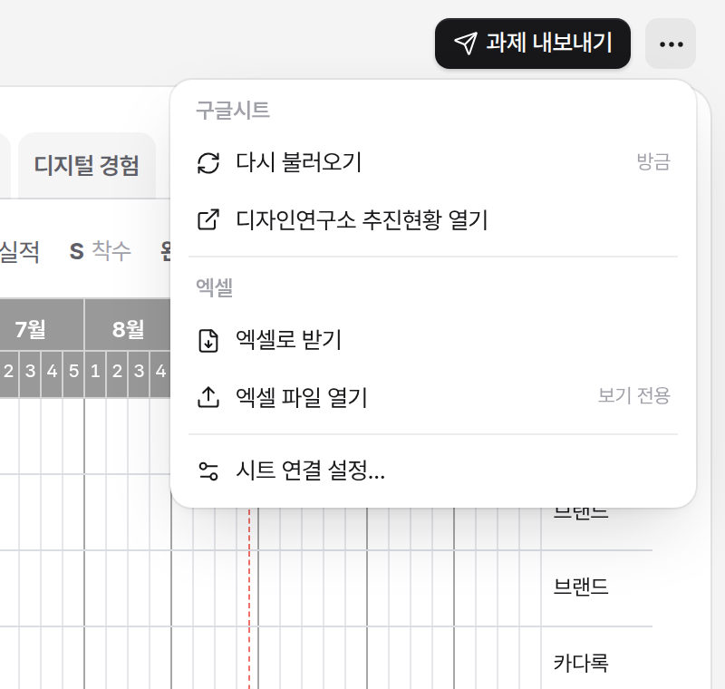
지금 연도의 구성을 이어받거나 빈 표로 한 해를 시작하고, 어디에 둘지 고릅니다.
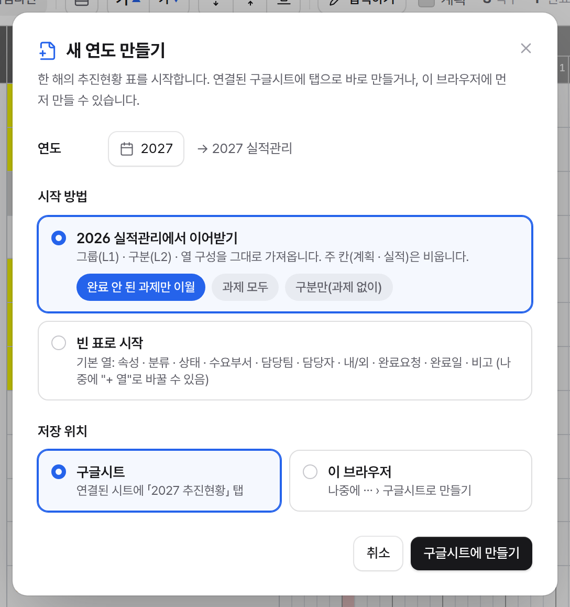
만들 연도를 고릅니다. 이미 있는 연도는 만들 수 없습니다.
이어받기는 그룹(L1) · 구분(L2) · 열 구성을 그대로 가져오고 주 칸(계획 · 실적)은 비웁니다. 과제는 완료 안 된 과제만 이월 / 과제 모두 / 구분만(과제 없이) 중에서 고릅니다. 빈 표로 시작은 기본 열과 첫 그룹(L1) 이름으로 시작합니다.
구글시트가 연결돼 있으면 구글시트(연결된 시트에 「YYYY 추진현황」 탭을 바로 만들기)와 이 브라우저(나중에 파일 › 구글시트로 만들기) 중에서 고릅니다.
그룹(L1) 탭별 일정표에서 과제와 일정을 입력합니다.
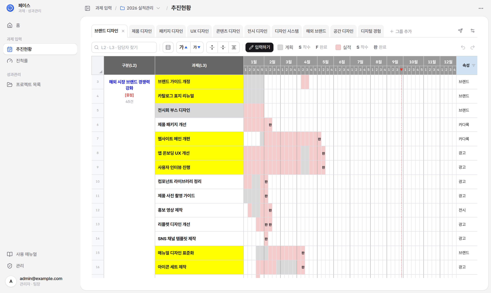
도구 줄의 입력하기를 누르면 입력 모드가 됩니다. 끝나면 입력 끝내기를 누릅니다.
한 번 누르면 선택, 더블클릭하거나 바로 타자를 치면 입력입니다. Enter 반영, Esc 취소. 여러 칸은 끌거나 Shift+클릭으로 고릅니다.
칸을 고르면 위에 서식 막대가 뜹니다. 글자색 · 크기 · 굵게 · 기울임 · 취소선 · 정렬 · 병합/나누기를 고른 칸 전체에 적용합니다.
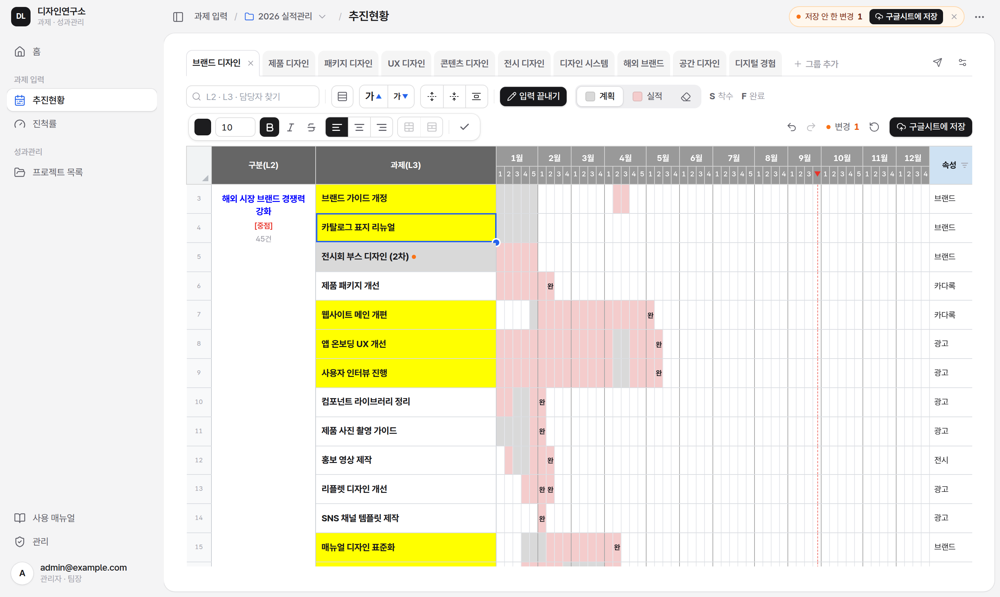
추진현황을 상태별 칸반 보드나 구분별 타임라인으로 봅니다.
찾기 옆 표 | 보드 | 타임라인으로 같은 과제(지금 그룹 탭 · 찾기 · 필터 · 저장 안 한 변경 포함)를 다른 모양으로 봅니다. 고른 모양은 이 브라우저에 기억됩니다.
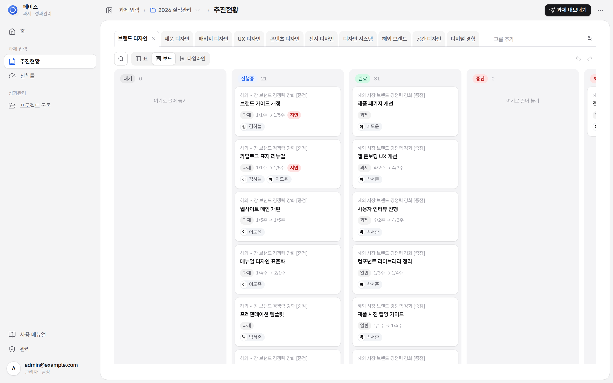
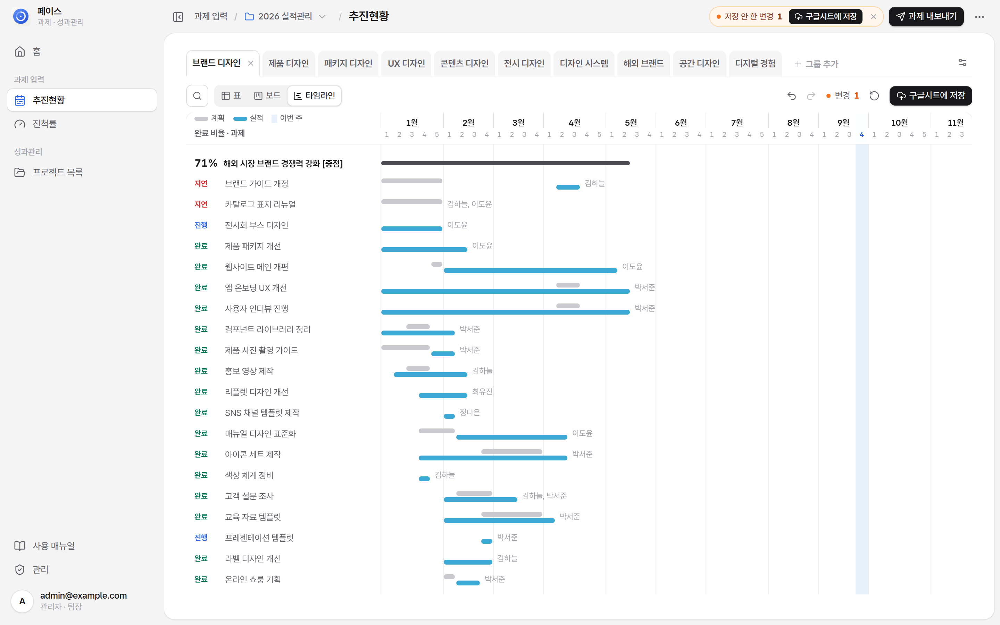
입력하기로 주 칸에 계획과 실적을 넣고, 구글시트에 저장해야 다른 팀원이 받아 볼 수 있습니다.
도구 줄의 입력하기를 누르면 입력 모드가 켜집니다. 도구 줄이 연한 파랑으로 바뀌고 표에 얇은 파란 테두리가 생기며, 버튼이 ✓ 입력 끝내기로 바뀝니다. 입력 중에는 보기 도구 자리에 서식 도구(칸 색 · 굵게 · 정렬 · 병합)가 들어와 도구 줄이 한 줄로 유지되고 표가 밀리지 않습니다. 저장할 수 없는 시트(운영 팀 시트)에서는 입력하기를 누르면 먼저 알려 줍니다. 계획(회색) · 실적(분홍) · 지우개를 고르고 주 칸을 누르거나 끌어서 칠합니다. 도구를 우클릭하면 색 팔레트가 열립니다.
칠한 묶음의 첫 주에 S가 찍히고, 계획이 끝나는 주에는 F가 자동으로 찍힙니다. 실적은 끝난 주 칸을 한 번 더 누르면 완이 찍히고, 다시 누르면 진행 중(글자 없음)으로 돌아갑니다.
고친 칸에는 주황 점이 찍히고, 그룹 탭 위 상태 줄이 주황으로 바뀌며 ● 저장 안 한 변경 N건 · 되돌리기 · 구글시트에 저장이 보입니다(줄 높이는 그대로라 칠하는 도중 표가 밀리지 않음). 고친 내용은 먼저 이 브라우저에만 쌓입니다. 되돌리기 ⌘/Ctrl+Z, 다시 하기 ⌘/Ctrl+Shift+Z.
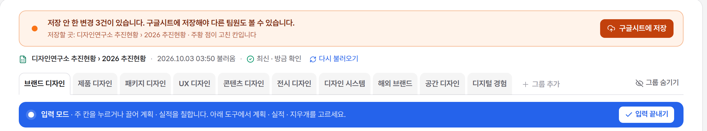
알림의 구글시트에 저장(또는 입력 중 도구 줄 오른쪽의 같은 버튼)을 누르면 시트에 씁니다. 입력 끝내기를 누를 때 저장 안 한 변경이 있으면 저장 창이 바로 뜹니다.
저장 안 한 변경 알림은 저장할 때까지 남아 있습니다. 저장하지 않고 탭을 닫으려 하면 브라우저가 한 번 묻습니다.
파일 › 엑셀로 받기로 지금 표를 받고, 팀장은 머리 줄 오른쪽 과제 내보내기 버튼으로 그룹(L1)을 성과관리 과제리스트로 보냅니다(팀장 화면에서는 입력하기가 보조 버튼).
추진현황의 일정 칸으로 착수 · 완료를 자동으로 세고, 구글시트에 저장하거나 PPT · 엑셀로 받습니다.
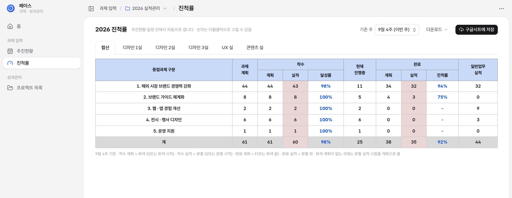
오른쪽 위 기준 주에서 어느 주까지 셀지 고릅니다(기본은 이번 주). 숫자 칸을 더블클릭하면 고칠 수 있고, 우클릭하면 그 칸의 과제 목록을 보거나 자동값으로 되돌립니다.
구글시트에 저장을 누르면 저장할 곳(「디자인연구소 추진현황 › 2026 진척률」처럼 같은 파일의 진척률 탭)을 확인한 뒤 씁니다. 합산과 실별 표가 한 탭에 위아래로 들어가고, 탭이 없으면 새로 만들며 이미 있으면 내용을 지금 표로 바꿉니다. 저장하면 시트에서 열기 링크가 나옵니다. 팀원은 시트에서 같은 표를 봅니다.
다운로드 › PPT는 미리보기에서 넣을 탭을 골라 탭마다 한 장(16:9)으로 받습니다.
다운로드 › 엑셀은 표마다 시트 한 장(합산 · 실 이름)으로 받습니다. 화면과 같은 색(머리글 파랑 · 실적 분홍 · 합계 회색)입니다.
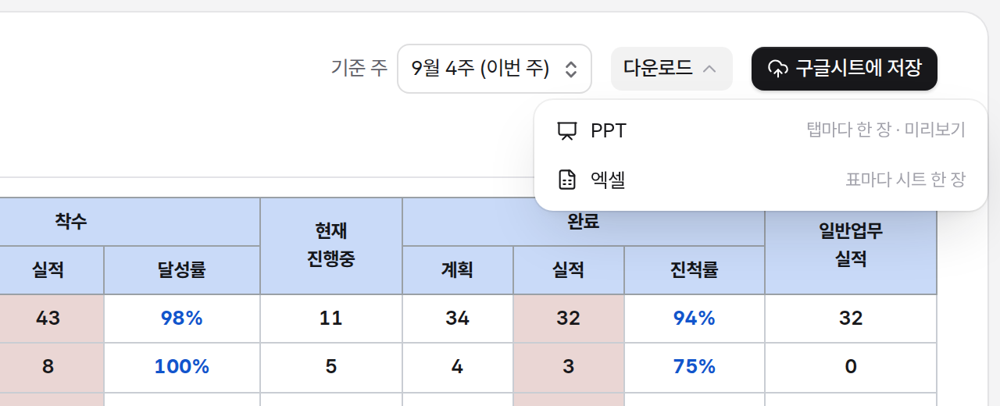
별도 설치 파일 없이 브라우저에서 바로 앱으로 설치할 수 있습니다. 설치해도 데이터와 사용 방법은 같습니다.
앱을 연 뒤 주소창 오른쪽 설치 아이콘을 누릅니다. 없으면 Chrome 메뉴 → 전송, 저장, 공유 → 페이지를 앱으로 설치.
Chrome에서 앱을 열고 오른쪽 위 ⋮ → 홈 화면에 추가 또는 앱 설치.
Safari에서 앱을 열고 공유 → 홈 화면에 추가 → 추가.
설치한 페이스 앱 창 오른쪽 위 ⋮ → 페이스 제거 → 제거. 또는 Chrome 주소창에 chrome://apps를 열고 페이스 아이콘 우클릭 → Chrome에서 삭제.
홈 화면의 페이스 아이콘을 길게 누름 → 제거(또는 앱 정보 → 제거). 홈 화면에 추가만 했다면 아이콘을 끌어 삭제로 놓습니다.
홈 화면의 페이스 아이콘을 길게 누름 → 북마크 삭제(또는 앱 제거) → 삭제.
막혔을 때 먼저 확인하세요.
그 팀원이 구글시트에 저장까지 했는지 확인하세요. 저장된 내용은 로그인할 때 자동으로 받고, 그룹 탭 위 시트 줄의 최신 내용 받기나 파일 › 구글시트에서 다시 불러오기로도 받습니다.
로그인할 때 최신 내용을 받고, 앱을 열어 둔 동안에도 5분마다(화면을 보고 있을 때) 시트를 다시 확인합니다. 내가 저장 안 한 변경이 없으면 바로 받고, 있으면 그룹 탭 위 시트 줄에 다른 팀원이 새로 저장했습니다 · 최신 내용 받기가 붙습니다(받아도 내 변경은 남음). 저장할 때는 고친 칸만 쓰고, 저장 직전에 시트를 다시 읽어 그사이 다른 사람이 먼저 바꾼 칸은 덮어쓰지 않고 주황 점으로 남겨 알려 줍니다. 같은 과제 이름을 동시에 바꾸거나 줄 이동 · 구분 나누기를 동시에 하는 것은 피해 주세요.
구글 인증 심사를 받지 않은 내부용 앱이라 처음 한 번 나옵니다. 고급 → 페이스(으)로 이동을 누르면 됩니다. 초대 메일의 링크(페이스 앱 주소)에서만 이렇게 넘기세요.
로그인한 계정이 그 구글시트의 편집자가 아닙니다. 시트 소유자에게 편집 권한을 요청하세요.
운영 팀 시트가 연결돼 있으면 저장하지 않습니다(읽기 전용). 팀장 · 관리자가 파일 › 시트 연결 설정…에서 입력할 시트를 연결합니다. 엑셀 파일로 연 표도 시트에 저장하지 않습니다.
팀장 · 관리자에게만 보입니다. 역할은 관리자가 권한 시트의 「사용자」 탭에서 정합니다.
연도 메뉴를 다시 열면 시트 목록을 새로 읽어 빠집니다. 탭은 남겨 두고 목록에서만 빼려면 그 연도의 ×를 누르세요.
새 버전이 올라온 직후일 수 있습니다. ⌘/Ctrl+Shift+R로 강력 새로고침하세요.
브라우저에 구글 계정이 여러 개 로그인돼 있을 때 생깁니다. 계정 골라서 다시 로그인을 눌러 계정을 직접 고르세요.
검색 결과가 없습니다.